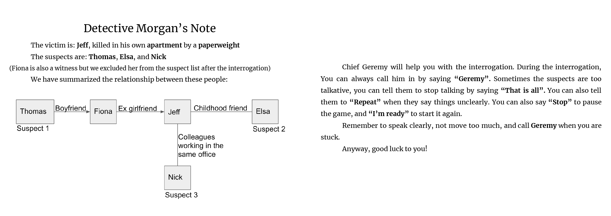

The Detective
The game is part of a group course project of DT2140 Multimodal Interaction and Interfaces. "The Detective" is a speech-based detective game built with Furhat robot.
Description
The game consisted of a story and the game logic to finish the game. The game goal was to find who murdered Jeff Martin, the victim in the story. Furhat played five characters: the default Furhat, the chief of police Geremy, and three witnesses. The user played a detective who would help Geremy find the murderer.
The game was completed by asking specific questions to specific witnesses. The user did not explicitly have to figure out who the murderer is to finish the game. It was enough to take the correct path, i.e. ask the right questions.
Contribution
This is a group project I cooperated with three other KTH students. In this project, I mainly contributed to game design, UX design & research, report writing, and video editing.